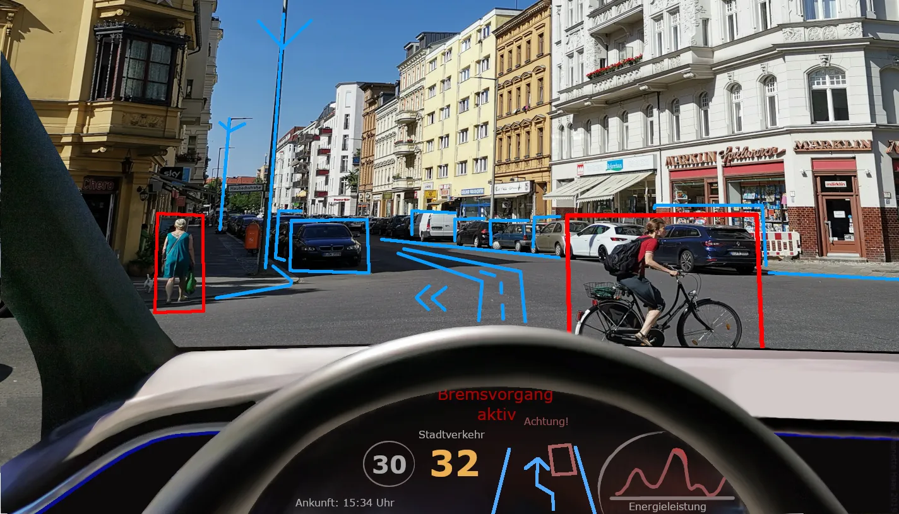
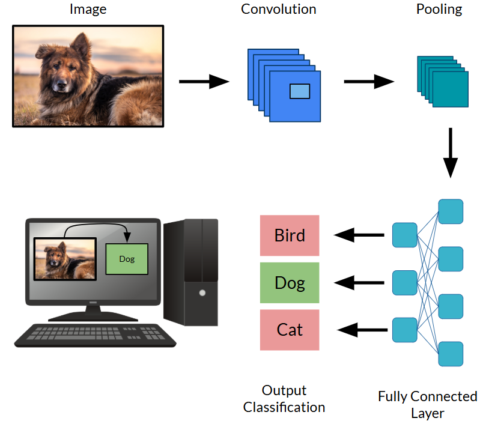
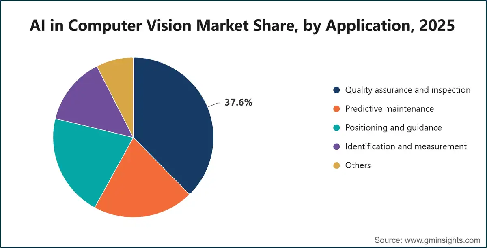

Computer vision is a field of artificial intelligence that allows computers to analyze and understand images and videos. Instead of seeing the world as humans do, computers process images as numerical data. AI models can learn patterns in that data to recognize objects, identify faces, detect movement, and understand scenes.
Modern computer vision often uses deep learning, especially convolutional neural networks (CNNs). These models learn visual features from examples rather than relying entirely on manually programmed rules.

A computer vision system begins with an image or video, which is represented as numerical pixel values. During training, a model processes many examples and adjusts its parameters to recognize useful patterns. Once trained, it can use those patterns to make predictions about new images.
For example, an image classifier might learn that certain shapes, textures, and colors are common in pictures of cats. When given a new image, it uses the features it learned to estimate which category the image belongs to. Other systems can locate objects, outline their boundaries, or track them across video frames.
Convolutional neural networks (CNNs) are a type of neural network designed to process images. Their main feature is the use of small matrices called kernels, or filters, that slide across an image to detect specific patterns. Each kernel contains numerical values that are multiplied by pixel values in a small region of the image. The results are added together to produce a value indicating how strongly that region matches the pattern the kernel detects. Different kernels can learn to identify features such as edges, lines, textures, and colors.
As a kernel moves across an image, it produces a new grid of values called a feature map. Areas that match the kernel's learned pattern produce stronger responses. CNNs use many different kernels to detect different features. The process of applying these filters is called convolution.
CNNs typically contain multiple convolutional layers. Early layers detect simple features, such as edges and corners, while deeper layers combine those features into more complex patterns, such as eyes, faces, or entire objects. Many CNNs also use activation functions, such as ReLU, which help the network learn more complicated patterns.
Another common component is pooling, which reduces the spatial size of feature maps. For example, max pooling keeps the largest value within a small region. This reduces the amount of information the network must process while preserving strong feature responses.
The final layers use the extracted features to make a prediction, such as identifying whether an image contains a cat or a dog. During training, the CNN compares its predictions with the correct labels and uses backpropagation and an optimization algorithm to adjust the kernel values and other parameters. Over many examples, the kernels learn which visual patterns are most useful for the task. CNNs are widely used for image classification, object detection, facial recognition, and medical image analysis.

Computer vision is used in many everyday technologies. Self-driving vehicles use cameras and vision models to detect pedestrians, road signs, and other vehicles. Hospitals can use image analysis tools to help identify patterns in X-rays and other medical scans. Security systems can detect activity, while manufacturers use vision systems to find defects in products.
Computer vision is also used to organize photos, recognize hand gestures, support augmented reality, and analyze images from satellites. Some systems combine vision with other AI techniques, allowing them to describe an image in words or answer questions about what it shows.

Computer vision can analyze large numbers of images quickly and recognize patterns that would be difficult to identify using simple rules. It can automate repetitive tasks and help people make sense of visual information. CNNs are especially effective at learning useful features directly from image data.
However, these systems can make mistakes when images are blurry, poorly lit, or different from their training examples. Their results also depend on the quality and variety of the training data, and biased data can lead to unfair or inaccurate predictions. Training advanced models can require significant computing resources, so their results should be tested carefully before they are used in important situations.